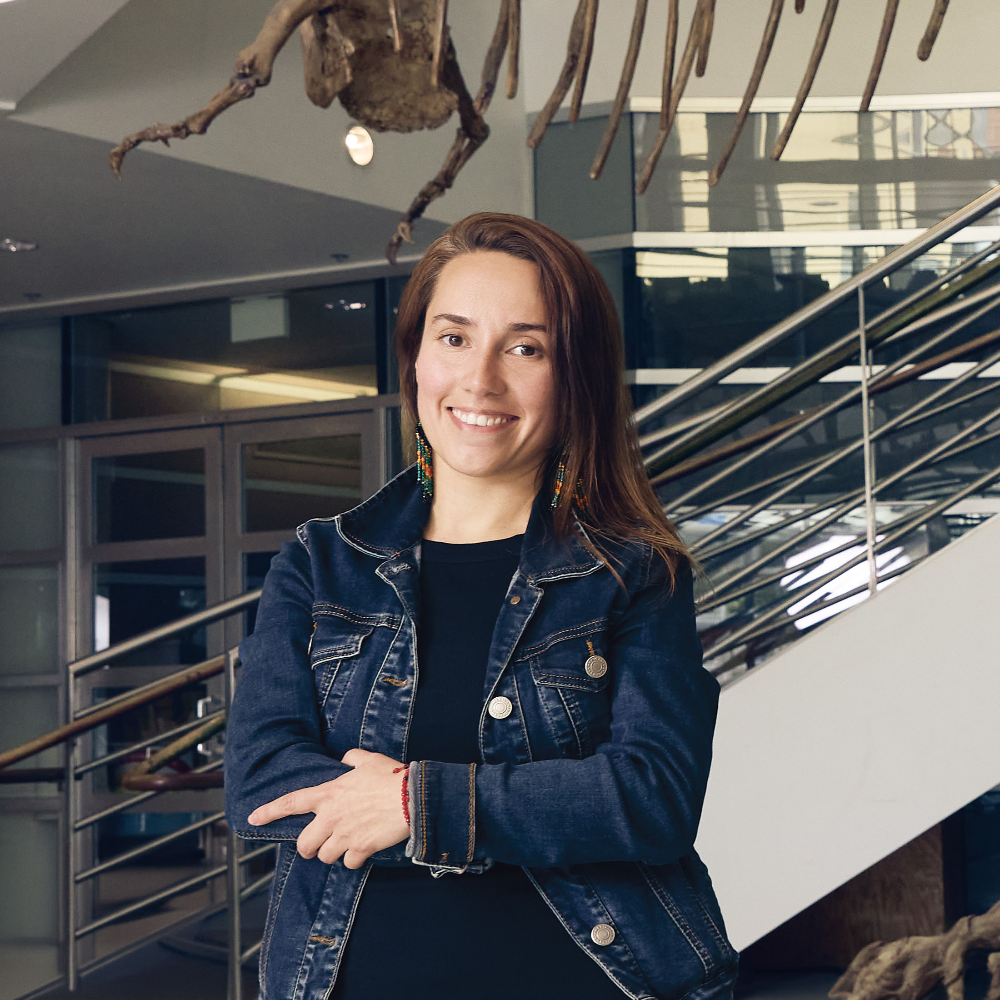

I am an evolutionary developmental biologist studying how genes orchestrate divergent craniofacial and sensory morphologies. For that purpose, I use Cyprinodon pupfishes from San Salvador Island, Bahamas, one of the fastest-evolving vertebrate radiations, as a novel model system for biomedical research. Pupfishes exhibit strikingly different craniofacial morphologies despite minimal genetic differentiation, providing a powerful system to dissect the mechanisms of rapid phenotypic change. My interdisciplinary approach bridges craniofacial development, gene regulation, evolution, morphology, neuroscience, and functional genomics.
In January of 2027 I'll open the Craniosensory Devomics lab (aka Palominos Craniofacial Evo-devo lab) at Texas A&M University's Center for Comparative Genomics (CCGEN). If you're interested in joining the lab, please reach out. We're recruiting at all levels.